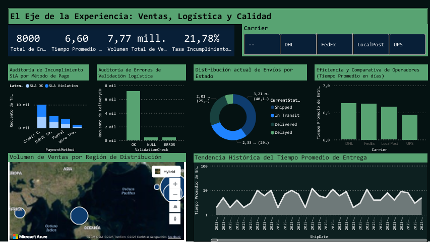

Una compañía logística con múltiples operadores (DHL, FedEx, UPS, LocalPost) enfrentaba un problema crítico: datos fragmentados en silos incompatibles. Cada dominio (Transacciones, Logística, Gobernanza) operaba de forma aislada, imposibilitando una visión unificada del rendimiento.
La pregunta estratégica era clara: ¿Cómo unificar tres dominios de datos con diferentes latencias (batch + near real-time) sin duplicar almacenamiento?
Diseñé una arquitectura zero-copy utilizando OneLake Shortcuts para acceder a datos en tiempo real sin replicación. El resultado: un único Modelo Semántico que combina datos de lote y streaming.
Acceso zero-copy a datos en KQL Database. Los analytics reflejan siempre el dato operacional más reciente sin duplicación de almacenamiento.
Eventhouse para ingesta de alta velocidad. Maneja datos near real-time de logística y gobernanza con latencia sub-segundo.
Almacenamiento transaccional en Lakehouse. Datos de ventas y revenue en formato Delta para ACID compliance.
Medidas calculadas para KPIs de negocio: [Tiempo Promedio Entrega], [Tasa Incumbimiento SLA], [Total Envíos].
Tres dominios de negocio unificados en un único modelo semántico, cada uno con su propia latencia y tecnología óptima:
| DOMINIO | CONTENIDO | LATENCIA | TECNOLOGÍA |
|---|---|---|---|
| D1: Transactions | Sales & Revenue Records | Batch | Lakehouse (Delta Lake) |
| D2: Logistics | Carrier Status, Delivery Times | Near Real-Time | KQL Database |
| D3: Governance | System Logs, SLA Compliance | Near Real-Time | KQL Database |
El dashboard final permite análisis cruzado entre dominios con filtros interactivos por carrier, rango de fechas y región de entrega.
El modelo semántico incluye medidas DAX optimizadas para el cálculo de KPIs críticos de negocio:
| CATEGORÍA | TECNOLOGÍAS |
|---|---|
| Platform | Microsoft Fabric |
| Data Engineering | PySpark, Dataflows Gen2 |
| Real-Time Ingestion | KQL Database (Eventhouse) |
| Data Storage | OneLake, Delta Lake |
| Data Virtualization | OneLake Shortcuts |
| BI & Analytics | Power BI, DAX |
| Query Language | KQL, SQL, DAX |
El repositorio incluye documentación detallada, scripts de ingesta y el archivo PBIX del dashboard.